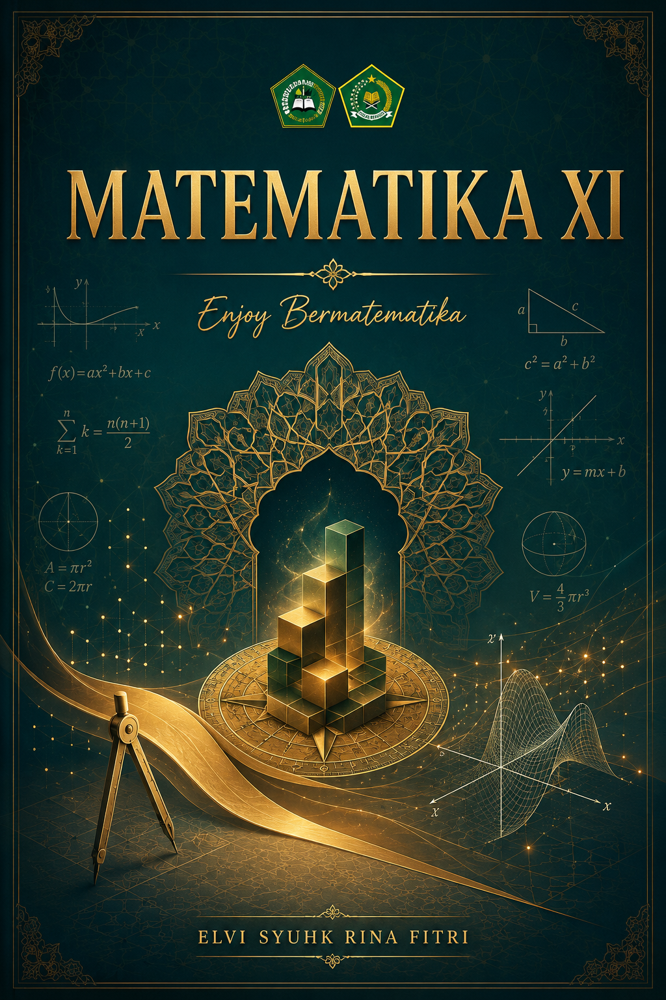
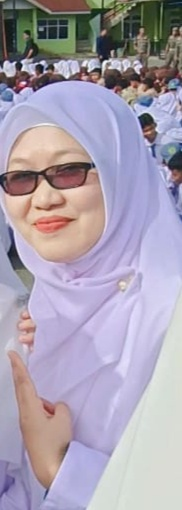

Panduan komprehensif 16 bab yang dirancang untuk mengubah cara pandang Anda terhadap matematika. Dari Fungsi hingga Ujian Akhir Semester, disajikan dengan pendekatan kasus nyata dan analisis mendalam.


Elvi Syuhk Rina Fitri
Penulis & Pendidik
MAS Diniyah Limo Jurai
Dirancang berdasarkan 11 pertemuan inti yang dikembangkan menjadi 16 bab komprehensif, mencakup persiapan UTS dan UAS dengan pendekatan analitis.
Bab 1 hingga 3 membangun fondasi logika matematika. Fungsi tidak hanya diajarkan sebagai rumus, tetapi melalui kasus nyata seperti perhitungan biaya produksi tetap dan variabel dalam usaha UMKM. Fungsi Komposisi dijelaskan melalui analogi konversi mata uang bertahap atau proses manufaktur multi-tahap. Fungsi Invers diberikan studi kasus tentang cara "membalik" proses pemberian diskon bertingkat untuk menemukan harga awal barang.
Bab 4 hingga 6 membahas Program Linear dengan studi kasus optimasi keuntungan perusahaan furnitur dengan kendala bahan baku. Matriks dan Determinan dijelaskan sebagai alat untuk menyelesaikan sistem persamaan linear (SPLDV/SPLTV) secara efisien, lengkap dengan aplikasi pada analisis input-output ekonomi sederhana.
Bab 9 hingga 11 memperkenalkan kalkulus dengan bahasa yang mudah dicerna. Limit Fungsi dijelaskan melalui konsep pendekatan kecepatan sesaat. Turunan dikaitkan dengan laju perubahan volume air dalam tangki atau optimasi luas tanah. Integral disajikan sebagai kebalikan turunan dan alat hitung luas daerah di bawah kurva, dengan kasus perhitungan volume benda putar sederhana.
Bab 12 hingga 15 mencakup Aturan Pencacahan, Peluang, Distribusi Peluang, dan Statistika Inferensial dasar. Studi kasus meliputi perhitungan peluang keberhasilan panen berdasarkan data cuaca historis, serta analisis data survei kepuasan siswa. Bab 8 dan 16 didedikasikan khusus untuk Ujian Tengah Semester (UTS) dan Ujian Akhir Semester (UAS) lengkap dengan try out dan pembahasan detail.
Klik pada setiap bab untuk membuka materi lengkap (Target: New Tab). Tombol video tersedia untuk topik penting.
Mengapa buku ini menjadi pilihan unggul dibandingkan referensi konvensional.
| Aspek Penilaian | Buku Teks Umum (Kemendikbud) | Buku Pendamping Komersial | Matematika XI (Elvi Syuhk Rina Fitri) |
|---|---|---|---|
| Pendekatan Studi Kasus | Teoritis, minim konteks lokal | Ada, tetapi seringkali terlalu abstrak | Sangat Kuat (Konteks UMKM, Diniyah, & Lingkungan Lokal) |
| Integrasi Multimedia | QR Code terbatas | Tautan video tidak terkurasi | Tombol Video Terkurasi per Topik Penting |
| Struktur Evaluasi | Latihan per subbab | Bank soal tanpa pembahasan mendalam | Bab Khusus UTS & UAS + Pembahasan Step-by-Step |
| Desain & Keterbacaan | Standar, padat teks | Ramai, kurang fokus | Modern, Stylish, Layout Elegan & Fokus |
Kemendikbudristek RI. Edisi Revisi 2022/2023. Jakarta: Pusat Perbukuan.
Sukino, dkk. 2023. Jakarta: Erlangga. (Edisi Kurikulum Merdeka).
James Stewart. 9th Edition, 2021. Cengage Learning. (Sebagai rujukan kedalaman konsep Kalkulus).
Sudijono, Anas. 2022. Jakarta: Rajawali Pers. (Rujukan Bab Statistika & Peluang).